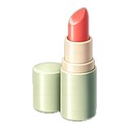
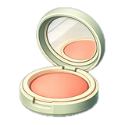
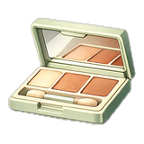
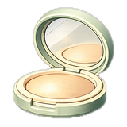

Personal Color Guide퍼스널 컬러 가이드パーソナルカラーガイド个人色彩指南個人色彩指南Guía de color personalPanduan Warna Personal
Colors that flatter your skin, eyes and hair — based on your measured warm/cool tone. A guide, not a rule.피부·눈동자·모발 톤에 어울리는 색을 분석 결과(웜/쿨)에 맞춰 안내해요. 정답이 아닌 참고용 가이드입니다.肌・瞳・髪のトーン（ウォーム/クール）の判定に基づき、似合う色をご案内します。あくまで参考ガイドです。根据你的肤色、瞳色与发色（暖/冷）判定，推荐适合你的色彩。仅供参考，并非定式。根據你的膚色、瞳色與髮色（暖/冷）判定，推薦適合你的色彩。僅供參考，並非定式。Colores que favorecen tu piel, ojos y cabello, según tu tono cálido/frío medido. Es una guía, no una regla.Warna yang menyanjung kulit, mata, dan rambutmu — berdasarkan tone warm/cool hasil pengukuran. Ini panduan, bukan aturan.
You'll jump to your analyzed season automatically — feel free to explore the others too.분석된 내 시즌으로 자동 이동해요. 다른 시즌도 자유롭게 살펴보세요.診断された自分のシーズンへ自動で移動します。他のシーズンも自由にどうぞ。会自动跳到你的诊断季型，其他季型也欢迎查看。會自動跳到你的診斷季型，其他季型也歡迎查看。Saltarás automáticamente a tu temporada analizada; también puedes ver las demás.Kamu akan langsung diarahkan ke season hasil analisismu — silakan jelajahi yang lain juga.
Spring Warm봄 웜톤春ウォーム春季暖色春季暖色Primavera cálidaSpring WarmSpring Warm
Bright, warm and clear. Fresh, youthful colors with a golden glow suit you best.밝고 따뜻하며 선명한 톤. 황금빛이 도는 산뜻하고 생기있는 컬러가 가장 잘 어울려요.明るく、暖かく、クリア。黄みのある爽やかで生き生きとした色がよく似合います。明亮、温暖、清澈。带金调的清新活力色彩最适合你。明亮、溫暖、清透。帶金調的清新活力色彩最適合你。Brillante, cálida y nítida. Te favorecen los colores frescos y juveniles con brillo dorado.Cerah, hangat, dan jernih. Warna segar dan muda dengan kilau keemasan paling cocok untukmu.
Best colors베스트 컬러ベストカラー最佳色彩最佳色彩Mejores coloresWarna terbaik
Coral
Peach
Warm ivory
Golden
Fresh green
Light camel
Colors to avoid피할 컬러避けたい色应避免應避免Colores a evitarWarna yang sebaiknya dihindari
Black
Cool gray
Burgundy
Icy blue
Foundation파운데이션ファンデーション粉底粉底BaseFoundation ·
Warm / yellow undertone, light–medium. Keep it fresh; avoid gray or pink-based shades.Warm / yellow or peachy undertone — fair to tan. A fresh or lightly sun-kissed base both suit you; avoid gray or pink-based shades.웜·옐로 언더톤, 라이트~미디엄. 산뜻하게. 그레이·핑크 베이스는 피하세요.ウォーム/イエロー系、ライト〜ミディアム。グレーやピンク系ベースは避けて。暖/黄调，浅至中等。保持清透，避免灰调或粉调粉底。暖/黃調，淺至中等。保持清透，避免灰調或粉調粉底。Subtono cálido / amarillo, claro–medio. Fresca; evita bases grises o rosadas.Subtono cálido / amarillo o melocotón — de claro a tostado. Te sienta bien una base fresca o ligeramente bronceada; evita bases grises o rosadas.Undertone warm / kuning, light–medium. Jaga tetap segar; hindari warna berbasis abu-abu atau pink.Undertone warm / kuning atau peach — dari fair sampai tan. Base yang segar maupun sedikit sun-kissed sama-sama cocok; hindari warna berbasis abu-abu atau pink.

💄Lip립リップ唇彩唇彩LabiosBibir
Coral
Peach
Apricot
Warm corals and peaches; sheer-to-glossy for a fresh finish.웜 코랄·피치 계열, 투명~글로시하게 발라 산뜻하게.ウォームなコーラル・ピーチを、ツヤ感のある軽い質感で。暖珊瑚、蜜桃色，水润到微光质地更清透。暖珊瑚、蜜桃色，水潤到微光質地更清透。Corales y melocotones cálidos; acabado translúcido o con brillo.Koral dan peach hangat; sheer sampai glossy untuk hasil yang segar.

🌸Blush블러셔チーク腮红腮紅RuborBlush
Peach
Apricot
Warm pink
Peach or apricot on the apples of the cheeks.볼 가운데 사과 부위에 피치·아프리코트로.頬の高い位置にピーチ・アプリコットを。蜜桃或杏色，打在笑肌处。蜜桃或杏色，打在笑肌處。Melocotón o albaricoque en las mejillas.Peach atau aprikot di puncak pipi.

👁️Eyeshadow아이섀도アイシャドウ眼影眼影SombraEyeshadow
Champagne
Gold
Warm brown
Champagne, gold and light warm brown for a clear-eyed glow.샴페인·골드·연한 웜브라운으로 화사하게.シャンパン・ゴールド・明るいウォームブラウンで華やかに。香槟、金色与浅暖棕，打造透亮眼妆。香檳、金色與淺暖棕，打造透亮眼妝。Champán, dorado y marrón cálido claro para una mirada luminosa.Champagne, emas, dan cokelat hangat muda untuk mata yang jernih bercahaya.

✨Highlighter하이라이터ハイライト高光高光IluminadorHighlighter
Warm gold
Champagne
Warm gold or champagne sheen on the high points.웜골드·샴페인 펄을 얼굴 하이포인트에.ウォームゴールド・シャンパンを高い位置に。暖金或香槟光泽，打在面部高点。暖金或香檳光澤，打在面部高點。Brillo dorado cálido o champán en los puntos altos.Kilau emas hangat atau champagne di titik-titik tinggi wajah.
Shades by tone톤별 색표トーン別カラー按色调细分按色調細分Colores por tonoWarna per tone
Spring Bright봄 브라이트春ブライト春季明亮型春季明亮型Primavera brillanteSpring Bright
My type내 타입わたしのタイプ我的类型我的類型Mi tipoTipe saya
Clear, vivid color wakes your face up. Saturated lips never look heavy on you.선명하고 맑은 색이 얼굴을 살려요. 립은 채도를 높여도 무겁지 않아요.鮮やかで澄んだ色が顔を明るく見せます。リップは彩度を上げても重くなりません。鲜明清透的颜色让脸更有精神。唇色饱和度高一些也不会显得厚重。鮮明清透的顏色讓臉更有精神。唇色飽和度高一些也不會顯得厚重。Los colores vivos y limpios iluminan tu rostro. Los labios saturados no te quedan pesados.Warna cerah dan jernih menghidupkan wajahmu. Bibir dengan warna pekat tidak terlihat berat padamu.
Golden Brown골든 브라운ゴールデンブラウン金棕色金棕色Marrón doradoCokelat Keemasan
Hair color헤어 컬러ヘアカラー发色髮色Color de peloWarna rambut
Golden brown골드 브라운ゴールドブラウン金棕色金棕色Castaño doradoGolden brown
Orange brown오렌지 브라운オレンジブラウン橘棕色橘棕色Castaño anaranjadoOrange brown
Honey brown허니 브라운ハニーブラウン蜂蜜棕蜂蜜棕Castaño mielHoney brown
Colors to avoid피할 색避けたい色应避免應避免Colores a evitarWarna yang sebaiknya dihindari
Mauve모브モーヴ藕紫藕紫MalvaMauve
Burgundy버건디バーガンディ勃艮第红勃艮第紅BurdeosBurgundy
Charcoal차콜チャコール炭灰色炭灰色CarbónArang
Blue black블루 블랙ブルーブラック蓝黑色藍黑色Negro azuladoBlue black
Spring Light봄 라이트春ライト春季浅淡型春季淺淡型Primavera claraSpring Light
My type내 타입わたしのタイプ我的类型我的類型Mi tipoTipe saya
Light, airy colors suit you. Deep shades get noticed before your face does.가볍고 밝은 색이 잘 받아요. 진한 색은 얼굴보다 색이 먼저 보여요.軽く明るい色がよくなじみます。濃い色は顔より色が先に目立ちます。轻盈明亮的颜色最衬你。颜色太深时，别人会先注意到颜色而不是你的脸。輕盈明亮的顏色最襯你。顏色太深時，別人會先注意到顏色而不是你的臉。Te favorecen los colores ligeros y luminosos. Con los tonos profundos se ve antes el color que tu cara.Warna ringan dan cerah cocok untukmu. Warna pekat lebih dulu terlihat daripada wajahmu.
Soft, cool and muted. Gentle rosy and powdery tones flatter you most.부드럽고 시원하며 차분한 톤. 은은한 로지·파우더리 컬러가 가장 잘 어울려요.柔らかく、涼やかで、くすみのあるトーン。ローズやパウダリーな色がよく似合います。柔和、清冷、低饱和。柔粉与雾面调最适合你。柔和、清冷、低飽和。柔粉與霧面調最適合你。Suave, fría y apagada. Te favorecen los tonos rosados y empolvados.Lembut, sejuk, dan kalem. Nuansa rosy dan powdery yang lembut paling menyanjungmu.
Best colors베스트 컬러ベストカラー最佳色彩最佳色彩Mejores coloresWarna terbaik
Rose pink
Lavender
Powder blue
Mauve
Soft plum
Cool gray
Colors to avoid피할 컬러避けたい色应避免應避免Colores a evitarWarna yang sebaiknya dihindari
Orange
Mustard
Warm brown
Tomato red
Foundation파운데이션ファンデーション粉底粉底BaseFoundation ·
Cool / pink undertone, light–medium. Soft and luminous; avoid yellow or orange bases.Cool / pink or rosy undertone — fair to light tan. Soft and natural; avoid yellow or orange bases.쿨·핑크 언더톤, 라이트~미디엄. 부드럽고 윤기있게. 옐로·오렌지 베이스는 피하세요.クール/ピンク系、ライト〜ミディアム。イエローやオレンジ系ベースは避けて。冷/粉调，浅至中等。柔润，避免黄调或橘调粉底。冷/粉調，淺至中等。柔潤，避免黃調或橘調粉底。Subtono frío / rosado, claro–medio. Suave; evita bases amarillas o naranjas.Subtono frío / rosado — de claro a ligeramente tostado. Suave y natural; evita bases amarillas o naranjas.Undertone cool / pink, light–medium. Lembut dan bercahaya; hindari base kuning atau oranye.Undertone cool / pink atau rosy — dari fair sampai light tan. Lembut dan natural; hindari base kuning atau oranye.
💄Lip립リップ唇彩唇彩LabiosBibir
Rose
Mauve
Soft pink
Rosy pinks and mauves; soft MLBB tones suit you.Rosy pinks and mauves — from a natural your-lips-but-better tint to a fuller flush, as you like.로지 핑크·모브 계열, 자연스러운 MLBB 톤으로.ローズピンク・モーヴ系、ナチュラルなMLBBトーンで。玫瑰粉、藕紫，自然的MLBB色调更显气质。玫瑰粉、藕紫，自然的MLBB色調更顯氣質。Rosas y malvas suaves; tonos MLBB naturales.Rosas y malvas suaves — desde un tono natural 'tus labios pero mejor' hasta un color más intenso, como prefieras.Pink rosy dan mauve; nuansa MLBB yang lembut cocok untukmu.Pink rosy dan mauve — dari tint warna bibir alami yang lebih segar sampai semburat yang lebih penuh, sesuai selera.
🌸Blush블러셔チーク腮红腮紅RuborBlush
Rose pink
Cool pink
Soft mauve
Cool rose or pink, blended softly for a natural flush.쿨 로즈·핑크를 은은하게 펴 발라 자연스럽게.クールなローズ・ピンクをふんわりと。冷玫瑰或粉色，轻柔晕染。冷玫瑰或粉色，輕柔暈染。Rosa frío difuminado para un rubor natural.Rose atau pink sejuk, dibaurkan lembut untuk semburat alami.
👁️Eyeshadow아이섀도アイシャドウ眼影眼影SombraEyeshadow
Lavender
Taupe
Cool mauve
Lavender, taupe and cool mauve for a soft, hazy eye.라벤더·토프·쿨모브로 부드럽고 은은하게.ラベンダー・トープ・クールモーヴで柔らかく。薰衣草、灰褐与冷藕，打造柔雾眼妆。薰衣草、灰褐與冷藕，打造柔霧眼妝。Lavanda, topo y malva frío para una mirada suave.Lavender, taupe, dan mauve sejuk untuk mata yang lembut dan berkabut.
✨Highlighter하이라이터ハイライト高光高光IluminadorHighlighter
Pink pearl
Cool silver
Pink-pearl or cool sheen for a soft glow.핑크펄·쿨 실버로 은은한 윤기.ピンクパール・クールな艶を控えめに。粉珠光或冷调光泽，柔和提亮。粉珠光或冷調光澤，柔和提亮。Perla rosada o brillo frío para un resplandor sutil.Pink-pearl atau kilau sejuk untuk cahaya yang lembut.
Shades by tone톤별 색표トーン別カラー按色调细分按色調細分Colores por tonoWarna per tone
Light, cool pastels make your skin look clear. Orange-leaning shades tend to look dull.밝고 차가운 파스텔이 피부를 맑게 보여 줘요. 주황기 도는 색은 칙칙해 보이기 쉬워요.明るく涼しげなパステルが肌を澄んで見せます。オレンジ寄りの色はくすんで見えがちです。明亮的冷调粉彩让肤色更清透。偏橘的颜色容易显得暗沉。明亮的冷調粉彩讓膚色更清透。偏橘的顏色容易顯得暗沉。Los pasteles claros y fríos hacen que tu piel se vea limpia. Los tonos anaranjados suelen apagarla.Pastel terang yang dingin membuat kulitmu tampak jernih. Warna yang condong oranye cenderung terlihat kusam.
Soft shades with a hint of gray feel effortless. Very bright colors tend to float on the skin.회색빛이 살짝 섞인 차분한 색이 편안해요. 쨍한 색은 얼굴에서 들떠 보여요.ほんのりグレーが混ざった落ち着いた色が自然です。ビビッドな色は顔から浮いて見えます。带一点灰调的柔和颜色最自然。太鲜艳的颜色容易浮在脸上。帶一點灰調的柔和顏色最自然。太鮮豔的顏色容易浮在臉上。Los tonos suaves con un toque de gris te sientan con naturalidad. Los colores muy vivos tienden a quedar flotando sobre la piel.Warna lembut dengan sedikit nuansa abu-abu terasa paling alami. Warna yang terlalu terang cenderung mengambang di kulit.
Deep, warm and muted. Rich earthy and spicy tones suit you best.깊고 따뜻하며 차분한 톤. 풍부한 어시·스파이시 컬러가 가장 잘 어울려요.深く、暖かく、くすみのあるトーン。アーシーでスパイシーな色がよく似合います。深邃、温暖、低饱和。浓郁的大地与香料色最适合你。深邃、溫暖、低飽和。濃郁的大地與香料色最適合你。Profunda, cálida y apagada. Te favorecen los tonos terrosos y especiados.Dalam, hangat, dan kalem. Nuansa earthy dan spicy yang kaya paling cocok untukmu.
Best colors베스트 컬러ベストカラー最佳色彩最佳色彩Mejores coloresWarna terbaik
Terracotta
Rust
Olive
Mustard
Camel
Deep brown
Colors to avoid피할 컬러避けたい色应避免應避免Colores a evitarWarna yang sebaiknya dihindari
Fuchsia
Icy pink
Cool gray
Pure white
Foundation파운데이션ファンデーション粉底粉底BaseFoundation ·
Warm / golden undertone, medium–deep. Avoid pink or cool bases.Warm / golden or olive undertone — medium to deep, bronzed and warm. Avoid pink or cool bases.웜·골든 언더톤, 미디엄~딥. 핑크·쿨 베이스는 피하세요.ウォーム/ゴールデン系、ミディアム〜ディープ。ピンクやクール系ベースは避けて。暖/金调，中至深。避免粉调或冷调粉底。暖/金調，中至深。避免粉調或冷調粉底。Subtono cálido / dorado, medio–profundo. Evita bases rosadas o frías.Subtono cálido / dorado u oliva — de medio a profundo, bronceado y cálido. Evita bases rosadas o frías.Undertone warm / golden, medium–deep. Hindari base pink atau cool.Undertone warm / golden atau olive — medium sampai deep, bronzed dan hangat. Hindari base pink atau cool.
💄Lip립リップ唇彩唇彩LabiosBibir
Brick
Terracotta
Warm nude
Brick, terracotta and warm nude in a velvet or matte finish.브릭·테라코타·웜누드를 벨벳/매트하게.ブリック・テラコッタ・ウォームヌードをマットに。砖红、陶土与暖裸色，丝绒或哑光质地。磚紅、陶土與暖裸色，絲絨或霧面質地。Ladrillo, terracota y nude cálido en acabado mate o aterciopelado.Brick, terakota, dan nude hangat dengan hasil velvet atau matte.
🌸Blush블러셔チーク腮红腮紅RuborBlush
Terracotta
Warm brown
Brick
Terracotta or warm brown, kept subtle for a sun-warmed look.테라코타·웜브라운을 은은하게 햇살 머금은 느낌으로.テラコッタ・ウォームブラウンを控えめに。陶土或暖棕，淡淡晕染，似被阳光晒暖。陶土或暖棕，淡淡暈染，似被陽光曬暖。Terracota o marrón cálido, sutil, como piel asoleada.Terakota atau cokelat hangat, tetap halus untuk kesan tersapu matahari.
👁️Eyeshadow아이섀도アイシャドウ眼影眼影SombraEyeshadow
Bronze
Copper
Olive
Bronze, copper and olive for a deep, warm eye.브론즈·코퍼·올리브로 깊고 따뜻하게.ブロンズ・カッパー・オリーブで深く暖かく。古铜、铜色与橄榄，打造深邃暖眼妆。古銅、銅色與橄欖，打造深邃暖眼妝。Bronce, cobre y oliva para una mirada profunda y cálida.Bronze, tembaga, dan olive untuk mata yang dalam dan hangat.
✨Highlighter하이라이터ハイライト高光高光IluminadorHighlighter
Bronze
Warm gold
Bronze or warm gold, kept subtle and skin-like.브론즈·웜골드를 피부처럼 은은하게.ブロンズ・ウォームゴールドを肌なじみよく控えめに。古铜或暖金，自然贴肤、不过亮。古銅或暖金，自然貼膚、不過亮。Bronce u oro cálido, sutil y natural.Bronze atau emas hangat, tetap halus dan menyatu dengan kulit.
Shades by tone톤별 색표トーン別カラー按色调细分按色調細分Colores por tonoWarna per tone
Warm, earthy, softened shades look most natural. Skip neon and icy pinks.따뜻하고 차분한 흙빛 색이 가장 자연스러워요. 형광기나 차가운 핑크는 피하세요.温かく落ち着いたアースカラーがいちばん自然です。蛍光色や冷たいピンクは避けましょう。温暖柔和的大地色最自然。避开荧光色和冷调粉色。溫暖柔和的大地色最自然。避開螢光色和冷調粉色。Los tonos cálidos, terrosos y suaves son los más naturales en ti. Evita el neón y los rosas fríos.Warna tanah yang hangat dan lembut paling alami untukmu. Hindari warna neon dan pink dingin.
Blue black블루 블랙ブルーブラック蓝黑色藍黑色Negro azuladoBlue black
Autumn Deep가을 딥秋ディープ秋季深邃型秋季深邃型Otoño profundoAutumn Deep
My type내 타입わたしのタイプ我的类型我的類型Mi tipoTipe saya
Deep, warm color never weighs your face down. Pastels leave the face looking washed out.깊고 따뜻한 색을 써도 얼굴이 눌리지 않아요. 파스텔은 얼굴만 떠 보여요.深く温かい色を使っても顔が沈みません。パステルは顔だけが浮いて見えます。用深暖色也不会压住脸。粉彩色会让脸显得发白发飘。用深暖色也不會壓住臉。粉彩色會讓臉顯得發白發飄。Los colores profundos y cálidos nunca apagan tu rostro. Los pasteles lo dejan deslavado.Warna hangat yang pekat tidak membebani wajahmu. Pastel membuat wajah tampak pucat.
Clear, cool and vivid. High-contrast jewel and icy tones suit you best.선명하고 시원하며 강렬한 톤. 또렷한 보석빛·아이시 컬러가 가장 잘 어울려요.クリアで、涼やかで、鮮やか。コントラストのある宝石色やアイシーな色がよく似合います。清晰、冷调、鲜明。高对比的宝石色与冰感色最适合你。清晰、冷調、鮮明。高對比的寶石色與冰感色最適合你。Nítida, fría y vívida. Te favorecen los tonos joya y helados de alto contraste.Jernih, sejuk, dan vivid. Nuansa jewel dan icy berkontras tinggi paling cocok untukmu.
Best colors베스트 컬러ベストカラー最佳色彩最佳色彩Mejores coloresWarna terbaik
True red
Fuchsia
Royal blue
Emerald
Pure white
Black
Colors to avoid피할 컬러避けたい色应避免應避免Colores a evitarWarna yang sebaiknya dihindari
Orange
Camel
Olive
Warm beige
Foundation파운데이션ファンデーション粉底粉底BaseFoundation ·
Cool / pink or neutral undertone. Clean and bright; avoid muddy or yellow bases.Cool / pink or neutral undertone — fair porcelain to deep, kept clear and clean. Avoid muddy or yellow bases.쿨·핑크 또는 뉴트럴 언더톤. 깨끗하고 화사하게. 칙칙하거나 옐로한 베이스는 피하세요.クール/ピンク〜ニュートラル系。くすみやイエロー系ベースは避けて。冷/粉或中性调。干净明亮，避免发黄或浑浊的粉底。冷/粉或中性調。乾淨明亮，避免發黃或混濁的粉底。Subtono frío / rosado o neutro. Limpia y luminosa; evita bases apagadas o amarillas.Subtono frío / rosado o neutro — de muy claro a profundo, limpio y nítido. Evita bases apagadas o amarillas.Undertone cool / pink atau netral. Bersih dan cerah; hindari base keruh atau kuning.Undertone cool / pink atau netral — dari fair porselen sampai deep, tetap jernih dan bersih. Hindari base keruh atau kuning.
💄Lip립リップ唇彩唇彩LabiosBibir
True red
Fuchsia
Plum
True red, fuchsia or plum — bold and clear suits you.트루레드·푸시아·플럼처럼 또렷하고 강한 컬러로.トゥルーレッド・フューシャ・プラムなど鮮やかな色で。正红、桃红或梅子色，浓郁清晰更出彩。正紅、桃紅或梅子色，濃郁清晰更出彩。Rojo puro, fucsia o ciruela: intensos y nítidos.Merah sejati, fuchsia, atau plum — yang berani dan jernih cocok untukmu.
🌸Blush블러셔チーク腮红腮紅RuborBlush
Cool pink
Plum
Deep rose
Cool pink or plum with a light hand to keep it clean.쿨핑크·플럼을 소량만 발라 깔끔하게.クールピンク・プラムを少量で清潔感を。冷粉或梅子色，少量薄扫保持干净。冷粉或梅子色，少量薄掃保持乾淨。Rosa frío o ciruela en poca cantidad, limpio.Pink sejuk atau plum dengan sapuan tipis agar tetap bersih.
👁️Eyeshadow아이섀도アイシャドウ眼影眼影SombraEyeshadow
Silver
Charcoal
Deep plum
Silver, charcoal and deep plum for a crisp, defined eye.실버·차콜·딥플럼으로 또렷하고 시크하게.シルバー・チャコール・ディーププラムでくっきりと。银色、炭灰与深梅，打造清晰利落眼妆。銀色、炭灰與深梅，打造清晰俐落眼妝。Plata, carbón y ciruela profunda para una mirada definida.Silver, charcoal, dan plum gelap untuk mata yang tegas dan terdefinisi.
✨Highlighter하이라이터ハイライト高光高光IluminadorHighlighter
Cool silver
Icy white
Cool silver or icy white for a crystalline glow.쿨 실버·아이시 화이트로 영롱한 광채.クールシルバー・アイシーホワイトで透明感のある輝きを。冷银或冰白，打造剔透光泽。冷銀或冰白，打造剔透光澤。Plata fría o blanco helado para un brillo cristalino.Silver sejuk atau putih icy untuk kilau sebening kristal.
Shades by tone톤별 색표トーン別カラー按色调细分按色調細分Colores por tonoWarna per tone
Vivid cool color and strong contrast suit you. Beige and coral tend to look faded.선명하고 차가운 색, 강한 대비가 잘 어울려요. 베이지·코랄 계열은 흐려 보여요.鮮やかで冷たい色、強いコントラストがよく似合います。ベージュやコーラル系はぼやけて見えます。鲜明的冷色和强烈对比最适合你。米色、珊瑚色容易显得模糊。鮮明的冷色和強烈對比最適合你。米色、珊瑚色容易顯得模糊。Te favorecen los colores fríos y vivos y el contraste fuerte. Los beige y corales tienden a verse desvaídos.Warna dingin yang terang dan kontras kuat cocok untukmu. Beige dan koral cenderung terlihat pudar.
Orange brown오렌지 브라운オレンジブラウン橘棕色橘棕色Castaño anaranjadoOrange brown
Winter Deep겨울 딥冬ディープ冬季深邃型冬季深邃型Invierno profundoWinter Deep
My type내 타입わたしのタイプ我的类型我的類型Mi tipoTipe saya
Dark, cool shades carry well on you, even worn intense. Peach and nude tones can drain your color.어둡고 차가운 색을 진하게 써도 무겁지 않아요. 피치·누드 계열은 생기가 빠져 보여요.暗く冷たい色を濃く使っても重くなりません。ピーチやヌード系は血色が抜けて見えます。深冷色画得浓一些也不显沉重。蜜桃色、裸色系会让气色变差。深冷色畫得濃一些也不顯沉重。蜜桃色、裸色系會讓氣色變差。Los tonos oscuros y fríos te quedan bien incluso intensos. Los melocotón y nude pueden restarte color.Warna gelap yang dingin tetap terlihat ringan padamu. Warna peach dan nude bisa membuat wajah tampak kurang segar.
상기 추천 링크는 올리브영 쇼핑 큐레이터 활동의 일환으로, 구매 시 일정 금액의 수수료를 제공받습니다.
Between warm and cool (neutral)웜·쿨 사이 (뉴트럴)ウォームとクールの間（ニュートラル）介于冷暖之间（中性）介於冷暖之間（中性）Entre cálido y frío (neutro)Di antara warm dan cool (netral)MLBB
When your warm/cool reading sits near the middle, MLBB shades close to your own lip and cheek color are safer than either extreme. Start here, then nudge warmer or cooler.웜·쿨 판정이 가운데에 가까우면 한쪽 끝 색보다 내 입술·볼 색과 비슷한 MLBB 색이 실패가 적어요. 여기서 시작해 조금씩 웜이나 쿨 쪽으로 옮겨 보세요.ウォーム・クールの判定が真ん中に近いなら、どちらかの端の色より、自分の唇や頬の色に近いMLBBカラーが失敗しにくいです。ここから始めて、少しずつウォームかクールに寄せてみてください。如果冷暖判定接近中间，比起两端的颜色，接近自己唇色和脸颊颜色的MLBB色更不容易出错。从这里开始，再慢慢往暖或冷的方向调整。如果冷暖判定接近中間，比起兩端的顏色，接近自己唇色和臉頰顏色的MLBB色更不容易出錯。從這裡開始，再慢慢往暖或冷的方向調整。Si tu resultado cálido/frío está cerca del medio, los tonos MLBB parecidos al color natural de tus labios y mejillas fallan menos que los extremos. Empieza aquí y ve probando un poco más cálido o más frío.Kalau hasil warm/cool-mu dekat ke tengah, warna MLBB yang mirip warna alami bibir dan pipimu lebih aman daripada warna ekstrem. Mulai dari sini, lalu geser sedikit ke arah warm atau cool.
Lip립リップ唇彩唇彩LabiosBibir
Rose Beige로즈 베이지ローズベージュ玫瑰米色玫瑰米色Beige rosadoBeige Mawar
Dusty Rose더스티 로즈ダスティローズ灰玫瑰灰玫瑰Rosa viejoDusty Rose
Rose Brown로즈 브라운ローズブラウン玫瑰棕玫瑰棕Marrón rosadoCokelat Mawar
Brick Rose브릭 로즈ブリックローズ砖红玫瑰磚紅玫瑰Rosa ladrilloRose Bata
Blush블러셔チーク腮红腮紅RuborBlush
Rose Beige로즈 베이지ローズベージュ玫瑰米色玫瑰米色Beige rosadoBeige Mawar
Swatch along the jawline in daylight and pick the shade that makes under-eye shadows look lighter.자연광 아래에서 턱선에 대어 보고, 눈 밑 그늘이 옅어 보이는 쪽을 고르세요.自然光の下でフェイスラインに当てて、目の下の影が薄く見える方を選びましょう。在自然光下贴着下颌线试色，选让眼下阴影看起来更淡的那个。在自然光下貼著下顎線試色，選讓眼下陰影看起來更淡的那個。Prueba el color en la línea de la mandíbula con luz natural y elige el que aclare más las sombras bajo los ojos.Coba oleskan di garis rahang di bawah cahaya alami, lalu pilih warna yang membuat bayangan di bawah mata tampak lebih samar.
Personal color is a guide to help you choose — trust what makes you feel confident. Lighting and screens can shift how colors look.퍼스널 컬러는 선택을 돕는 참고예요. 무엇보다 본인이 좋아하고 자신있는 색을 우선하세요. 조명·화면에 따라 색이 다르게 보일 수 있어요.パーソナルカラーは選択を助ける目安です。自分が心地よいと感じる色を大切に。照明や画面で色味は変わって見えます。个人色彩只是帮助选择的参考，最重要的是你自己喜欢、自信的颜色。光线与屏幕会影响颜色呈现。個人色彩只是幫助選擇的參考，最重要的是你自己喜歡、自信的顏色。光線與螢幕會影響顏色呈現。El color personal es una guía para ayudarte a elegir; confía en lo que te haga sentir segura. La luz y las pantallas alteran los colores.Warna personal adalah panduan untuk membantumu memilih — percayai apa yang membuatmu merasa percaya diri. Pencahayaan dan layar bisa mengubah tampilan warna.